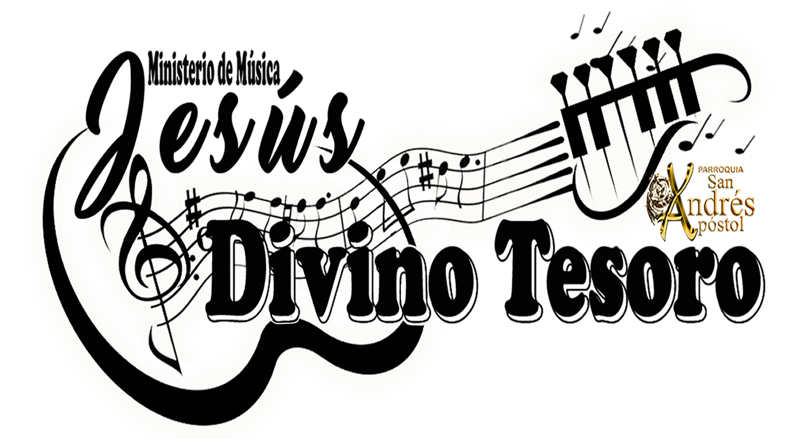

Jesús Divino Tesoro - Ministerio de Música
🼠Jesús Divino Tesoro
"Todo lo que respira alabe al Señor" - Salmo 150,6
Inicio
|
Misión
|
Cantos
|
Rinconcito Espiritual
|
Contacto
Imagen y Texto Centrado
Este es un texto centrado junto con la imagen.